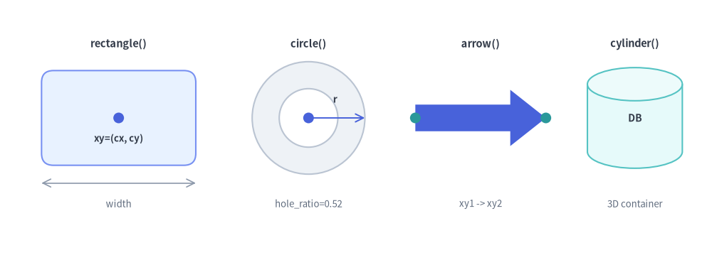

drawlib.shapes
Provides 43 declarative geometric primitives across 6 categories (basic, polygon, arrow, container, badge, symbol). Planar and container shapes anchor at their geometric center xy=(cx, cy), while straight block arrows connect xy1 to xy2.
from drawlib.shapes import arrow, circle, cylinder, ellipse, rectangle

Source Code
from drawlib.canvas import save, setup
from drawlib.lines import line
from drawlib.shapes import arrow, circle, cylinder, rectangle
from drawlib.styles import Colors, Styles
from drawlib.text import text
setup(width=120, height=44)
# 1. rectangle(xy, width, height)
rectangle(
(20, 24),
width=26,
height=16,
style=Styles.PrimaryNeutral.patch(shape_r=2.0),
)
circle((20, 24), radius=0.9, style=Styles.PrimaryFlat)
text((20, 20.5), "xy=(cx, cy)", style=Styles.DarkBold.patch(text_size=9.5))
line((7, 13), (33, 13), arrow_head="<->", style=Styles.Muted.patch(line_width=1.2))
text((20, 9.5), "width", style=Styles.Muted.patch(text_size=9.5))
text((20, 36.5), "rectangle()", style=Styles.DarkBold.patch(text_size=10.5))
# 2. circle(xy, radius, hole_ratio)
circle((52, 24), radius=9.5, hole_ratio=0.52, style=Styles.Neutral)
circle((52, 24), radius=0.9, style=Styles.PrimaryFlat)
line((52, 24), (61.5, 24), arrow_head="->", style=Styles.Primary.patch(line_width=1.4))
text((56.5, 27.2), "r", style=Styles.DarkBold.patch(text_size=9.8))
text((52, 9.5), "hole_ratio=0.52", style=Styles.Muted.patch(text_size=9.5))
text((52, 36.5), "circle()", style=Styles.DarkBold.patch(text_size=10.5))
# 3. arrow(xy1, xy2, tail_width, head_width, head_length)
arrow(
(70, 24),
(92, 24),
tail_width=4.5,
head_width=9.5,
head_length=6.0,
style=Styles.PrimaryFlat,
)
circle((70, 24), radius=0.9, style=Styles.SecondaryFlat)
circle((92, 24), radius=0.9, style=Styles.SecondaryFlat)
text((81, 9.5), "xy1 -> xy2", style=Styles.Muted.patch(text_size=9.5))
text((81, 36.5), "arrow()", style=Styles.DarkBold.patch(text_size=10.5))
# 4. cylinder(xy, width, height)
cylinder(
(107, 24),
width=16,
height=17,
style=Styles.SecondaryNeutral,
text="DB",
text_style=Styles.DarkBold.patch(text_size=10.0),
)
text((107, 9.5), "3D container", style=Styles.Muted.patch(text_size=9.5))
text((107, 36.5), "cylinder()", style=Styles.DarkBold.patch(text_size=10.5))
save()
defrectangle(xy, width, height, *, style, ...)#
Draws an axis-aligned or rotated rectangle, rounded service card (style.patch(shape_r=...)), or hollow frame (hole_ratio) centered at xy.
def rectangle(
xy: tuple[float, float],
width: float,
height: float,
*,
hole_ratio: float | None = None,
style: Style,
text: str = "",
text_style: Style | None = None,
) -> None: ...
| Parameter | Type | Default | Description |
|---|---|---|---|
xy |
tuple[float, float] |
Required | Geometric center (cx, cy) of the rectangle. |
width |
float |
Required | Horizontal span in canvas units (> 0). |
height |
float |
Required | Vertical span in canvas units (> 0). |
hole_ratio |
float | None |
None |
Optional inner cutout ratio in (0.0, 1.0) creating a hollow frame. |
style |
Style |
Required | Fill, border stroke, corner rounding (shape_r), and rotation (angle). |
text |
str |
"" |
Optional label centered inside the shape. |
text_style |
Style | None |
None |
Optional typography override for text. |
defcircle(xy, radius, *, style, ...)#
Draws a solid circle or concentric annular ring (hole_ratio) centered at xy.
def circle(
xy: tuple[float, float],
radius: float,
*,
hole_ratio: float | None = None,
style: Style,
text: str = "",
text_style: Style | None = None,
) -> None: ...
| Parameter | Type | Default | Description |
|---|---|---|---|
xy |
tuple[float, float] |
Required | Center coordinate (cx, cy). |
radius |
float |
Required | Outer radius (> 0); total bounding box is 2 * radius square. |
hole_ratio |
float | None |
None |
Inner cutout radius ratio in (0.0, 1.0) for donut rings. |
style |
Style |
Required | Required Style token controlling fill and border stroke. |
text |
str |
"" |
Optional centered text label. |
text_style |
Style | None |
None |
Optional typography style override. |
defellipse(xy, width, height, *, style, ...)#
Draws an ellipse or elliptical ring bounded by total horizontal axis width and vertical axis height.
def ellipse(
xy: tuple[float, float],
width: float,
height: float,
*,
hole_ratio: float | None = None,
style: Style,
text: str = "",
text_style: Style | None = None,
) -> None: ...
defarrow(xy1, xy2, tail_width, head_width, head_length, ...)#
Draws a straight filled polygon block arrow from start point xy1 to end point xy2 with optional shaft-aligned label text.
def arrow(
xy1: tuple[float, float],
xy2: tuple[float, float],
tail_width: float,
head_width: float,
head_length: float,
head: Literal["->", "<-", "<->"] = "->",
*,
style: Style,
text: str = "",
text_style: Style | None = None,
) -> None: ...
| Parameter | Type | Default | Description |
|---|---|---|---|
xy1 |
tuple[float, float] |
Required | Tail start coordinate (x1, y1). |
xy2 |
tuple[float, float] |
Required | Tip end coordinate (x2, y2). Distance must exceed head_length. |
tail_width |
float |
Required | Thickness of the arrow shaft (> 0). |
head_width |
float |
Required | Outer fin width of the arrowhead (> tail_width). |
head_length |
float |
Required | Length of the arrowhead along the shaft vector (> 0). |
head |
"->" | "<-" | "<->" |
"->" |
Arrowhead placement direction. |
style |
Style |
Required | Required fill and stroke Style. |
defcylinder(xy, width, height, *, style, ...)#
Draws a 3D database/storage cylinder centered at xy with configurable stacked platter disks.
def cylinder(
xy: tuple[float, float],
width: float,
height: float,
*,
disks: int = 1,
style: Style,
text: str = "",
text_style: Style | None = None,
) -> None: ...